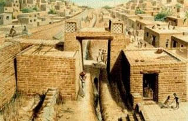
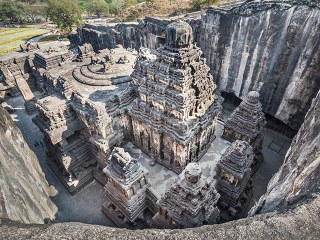
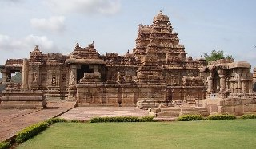
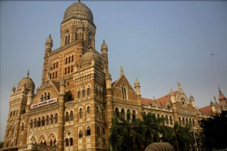
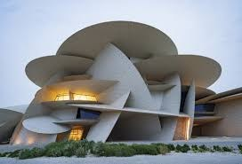

One of the most enduring achievements of Indian civilization is undoubtedly its architecture. As a result of vast diversities, a vast range of architectural specimens has evolved, retaining a certain amount of continuity across history. The beginning of architecture we know now started almost 4000 years ago, with the Indus Valley Civilisation. The earliest architecture was first observed in the Indus Valley Civilisation. The best-known sites of this civilization were Harappa and Mohenjo-Daro. At these places, the houses and the various buildings were arranged in a grid-like scheme. We cannot even imagine our lives now if the houses were not arranged properly. Houses were built out of bricks, stone, and wood. The entire city was more functional than decorative, and every piece of architecture served a specific purpose.In the 3rd Century BCE, a new type of Architecture was observed. It was Rock-Cut Architecture. Rock-cut architecture refers to structures, sculptures, and buildings that were carved out of a single solid natural rock, right where it stood. India is most famous around the world for its rock-cut architecture, with over 1500 known structures that have gained global importance. Throughout the history of rock-cut temples, the elements of wooden construction have been retained. Skilled craftsmen learned to mimic timber texture, grain, and structure. Some examples of these caves are the Bhaja Caves, the Karla Caves, and the Ajanta Caves. Relics found in those caves suggest an important connection between the religious and the commercial, as Buddhist missionaries often accompanied traders on the busy international trading routes through India.By the late 7th and early 8th Century temple, Architecture became famous. Temple architecture is one of the most important aspects of Indian architecture. The ancient Indian temple architecture is divided into three broad styles namely the Nagara or the Northern style, the Dravida or the Southern style, and the Vesara or mixed style. One prominent feature or theme followed through all temple architecture is the decoration. Ancient Indian temples were more focussed on embellishments which were reflected in the intricate details of figured sculptures and architectural elements. The areas of Hindu temple sites are usually vast with many of them built near water bodies, in the lap of nature. The layout of a Hindu temple pursues a geometrical design known as Vastu-Purusha-mandala.In the 13th Century, India faced several changes in architecture. With the arrival of Muslims in India, many architectural designs and techniques were incorporated in existing buildings which gave rise to Indo-Islamic architecture. This unique style combined Hindu and Islamic architecture and can be broadly divided into Mughal architecture and Architecture of the Delhi Sultanate or the Imperial Style. Mughal architecture is a unique combination of Central Asian, Islamic, Persian, Arabic, and Turkish architectural styles. It is characterized by huge bulbous shaped domes, large halls, colossal gateways, and sleek minarets. The Imperial Style, on the other hand, features elaborately embellished arches and domes. Floral patterns were common, as well as other Hindu motifs like lotuses and swastikas juxtaposed with verses from the Quran.With the arrival of the British, In the late 19th Century Indo-Saracenic Architecture was observed. Initially, the British constructed governmental and public buildings in European classical styles regardless of Indian local climate and traditions. Only after 1858, the local architectural traditions, especially the Mughal tradition were introduced to the colonial erections. This is the reason that it is also known as the Indo-British style.And finally, now is the time where we have contemporary Architecture. Contemporary architecture is basically a form of construction that embodies the various styles of building designs stemming from a wide range of influences. It cuts away from the modern architecture of the late twentieth century by including eco-friendly features and embracing all kinds of creativity. Aside from employing different styles and influences, the contemporary architecture uses the latest technology and materials. We have gone through so many phases and changes but there is one thing in common, that is the complication of architecture. At that time and time, Architecture was equally complicated but they were complicated in different ways. Nowadays there is not much intricacy compared to previous times but the construction itself is much more complex. There are many things we have taken from ancient times like the grid scheme in Indus Valley Civilisation. Those times are a base for today’s architecture and principles. We would be nothing without our pasts.As an Architect, you design for the PRESENT with an awareness of the PAST for a FUTURE which is essentially UNKNOWN - Herman Foster.